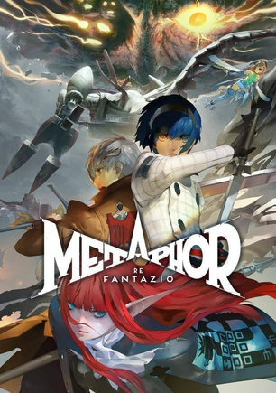

2025年1月
广播发布后不可编辑，所以每条都是那一刻的原话。
2025-01-29 18:50:13
 想看 潜往不可知之地 / Diving into the Unknown
想看 潜往不可知之地 / Diving into the Unknown
2025-01-22 20:21:58
看过 走走停停 ★★★★☆
挺写实、也首尾呼应的一个作品。开始的时候男主从北京回来，开始被拍摄纪录片，然后到最后女主也从北京回来了，开着车走走停停。平淡而真实，人生确实就是走走停停
2025-01-22 20:09:49
看过 眷思量 第二季 ★★★★☆
结束的有点突然，总体还不错
2025-01-22 20:07:20

2025-01-20 03:59:47
玩过 隐形守护者 ★★★★★
久闻其名，没想到剧情这么精彩。地下党的发明也是绝顶聪明，敌方不知道身份，友方也不知道身份，这在这个时代是很难想象的。可惜的是第三号记录了其他人的事迹，自己最后却没有任何荣誉就殒命了，respect。
2025-01-19 05:51:41
看过 眷思量 第一季 ★★★★☆
画面非常精致了，剧情慢热但是我喜欢。期待第二季。 //看了20个国漫介绍，貌似就这一个能提起兴趣 🤔 目前看了两集，感觉还行
2025-01-19 05:50:49
玩过 美女，请别影响我学习 ★★★☆☆
一直好奇这类游戏是啥样的，这次看芒果冰年度盘点推荐了下，于是尝试了一下。原来就是视频galgame，但是选项很少，然后非常的尬，虽然看出来演员很努力了，但是依然会感觉比较尬，毕竟这类视频制作难度也挺大的，和隐形守护者的ppt风格比起来难度大了很多。但是总体来说，还是偏废萌。
2025-01-18 18:37:44

2025-01-17 14:58:51
在看 人生切割术 第二季 / Severance Season 2
看完第一集，感觉女主是不是没有切割就进来工作区了
2025-01-17 09:21:32
看过
oh 才发现这是大结局，完结撒花！主角不愧是主角一人是双神，还有个导演剪辑版真行，加了些不错的细节。
2025-01-17 09:17:12
在看 眷思量 第一季
看了20个国漫介绍，貌似就这一个能提起兴趣 🤔 目前看了两集，感觉还行
2025-01-13 04:18:23
想看 眷思量 第一季
看了20个国漫介绍，貌似就这一个能提起兴趣 🤔
2025-01-12 15:28:10
看过
所有主角团的人都要找个神当当。。。
2025-01-12 15:27:38
看过
作者/编剧连章节名都懒得好好起一下了
2025-01-11 20:05:33
看过
总算回归主线了，但是还是打打打打打。。。。。
2025-01-11 20:03:09
看过 现在拨打的电话 / 지금 거신 전화는 ★★★☆☆
设定挺有意思，各种假装身份，通过电话来揭秘，然而片尾突然玩消失实在是摸不着头脑。另外，Netflix你怎么也周更韩剧了。。
2025-01-11 19:56:30
看过
打打打打打
2025-01-11 19:53:35
看过
跟天使打这么久。。。就还是得开新挂
2025-01-11 08:55:45
看过
主角在森林里马不停蹄地遇到正好合适的怪物，然后这章节名叫《深海魔鲸》，章节结束了还没开始打蚂蚁群，感觉是下下章的章节名吧
2025-01-11 08:53:08
看过
总算搞清楚天使家族的关系了，原来是天使和蜘蛛罗刹的后裔，总之就是这四个亲人互相残杀，最后留下来的必须是天使
2025-01-11 08:50:55
看过 斗罗大陆1 第六季 ★★★☆☆
这次又是开挂创造历史，史上无记载的怪物给主角遇到了
2025-01-11 08:49:53
看过
这次开的挂叫爹
2025-01-09 20:21:27
看过
大量那种没什么台词的啊哦哟哇的场景。。。
2025-01-09 20:13:17
看过
这季也是犯困
2025-01-09 20:12:12
看过
这季看着犯困
2025-01-09 18:13:11
在看
2025-01-09 18:12:20
看过
没啥想说的，每季这么短了现在
2025-01-09 17:13:36
在看
2025-01-09 17:13:02
看过
中规中矩，平平无奇
2025-01-09 06:20:28
在看
2025-01-09 06:20:00
看过
这季节奏好些
2025-01-08 20:19:49
在看
2025-01-08 20:19:22
看过
所以这一季叫阿银复活，其实是小舞复活？？？
2025-01-08 19:42:55
在看
武魂殿的斗罗开始领便当了，看来快完结了
2025-01-08 19:42:00
看过
这季开挂还是多，但是有意思的是大明二明竟然也献祭了
2025-01-08 19:09:44
在看
不知道这季开挂多不多
2025-01-08 19:09:09
看过
打起来了
2025-01-08 05:35:00
在看
2025-01-08 05:34:21
看过 斗罗大陆1 第五季 ★★☆☆☆
这每季标题起的太confusing了，明明没复活。。。 //这季真的复活？希望不是又一直开挂
2025-01-07 17:26:13
在看 斗罗大陆1 第五季
这季真的复活？希望不是又一直开挂
2025-01-07 17:24:59
看过
这一季看下来不知道怎么重返昊天的，这个副标题起的没头没尾。。
2025-01-06 20:05:09
在看
2025-01-06 20:04:37
看过
主角一言不合就开挂
2025-01-06 04:18:46
在看
2025-01-06 04:18:01
看过
这一季开挂程度比较高，3星
2025-01-05 14:06:02
在看
标记总算赶上了
2025-01-05 14:05:08
看过 斗罗大陆1 第四季 ★★★★★
134集是最催泪的。。猝不及防
2025-01-05 14:04:36
看过
豆瓣的这个部分分的好confusing啊，集数完全对不上。看到145集标记的。
2025-01-05 14:03:07
看过
豆瓣的这个部分分的好confusing啊，集数完全对不上。看到145集标记的。
2025-01-05 14:02:59
看过
豆瓣的这个部分分的好confusing啊，集数完全对不上。看到145集标记的。
2025-01-05 13:56:57
看过 斗罗大陆1 第三季 ★★★★★
硬盘库存清完了，到145集。没想到竟然给我来个催泪季，好吧，唐家三少还是厉害。
2025-01-05 13:51:45
 看过 杀手游戏 / The Killer’s Game ★★★★☆
看过 杀手游戏 / The Killer’s Game ★★★★☆
之前看了忘了标记，总体还不错，爆米花片
2025-01-04 06:33:26
2025-01-01 19:06:46
在看 斗罗大陆1 第三季
硬盘库存还没清完
2025-01-01 19:06:28
看过 斗罗大陆1 第二季 ★★★★☆
不知道这个部分是怎么划分的，精英赛看着看着就变成昊天扬威了。。 //男主母亲是蓝银草？
2025-01-01 07:35:45
玩过 斗罗大陆 新世界 Soul Land - New World ★★★☆☆
设定是符合原作的，甚至剧情都和原作一样，然而手游的属性也是原汁原味的。